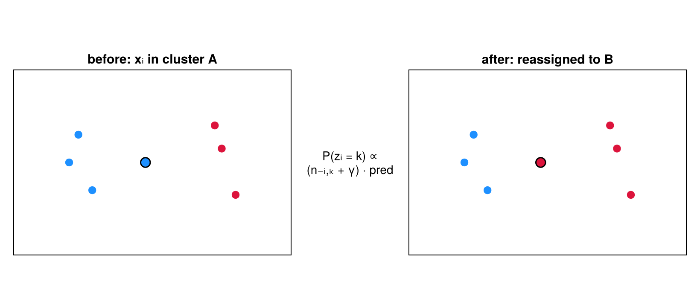
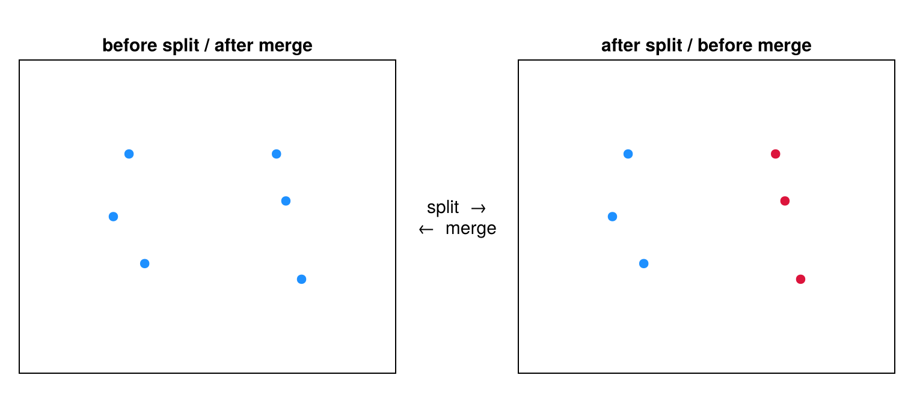
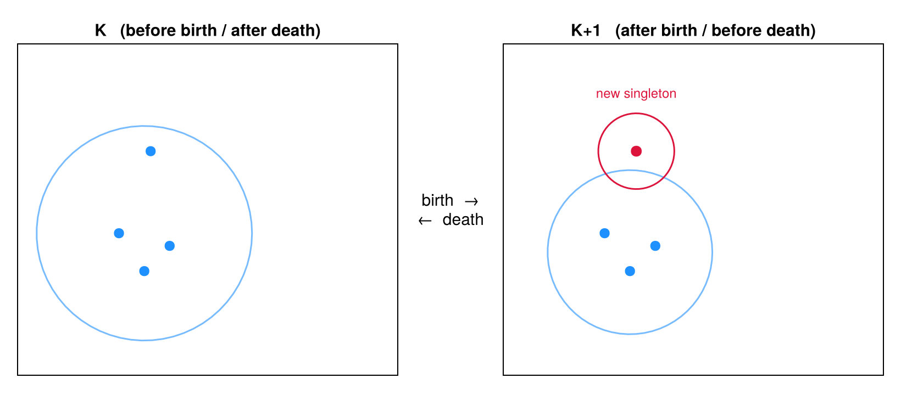
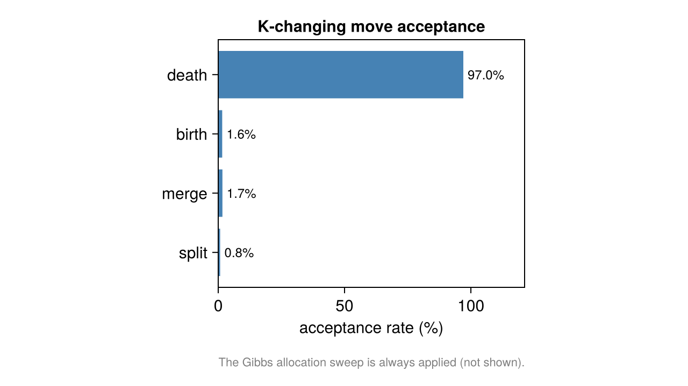

The Sampler: Moves
run_collapsed_chain runs a collapsed Gibbs / reversible-jump MCMC chain over the allocation vector. Because the state is discrete, every move is a re-partitioning and there is no Jacobian term anywhere in the acceptance ratios.
Move schedule
Each iteration draws one $r \sim U(0,1)$ and picks a move (collapsed_sampler.jl):
| Branch | Condition | Probability | Work |
|---|---|---|---|
| Gibbs allocation sweep | $r < 0.50$ | 0.50 | one full sweep of all $N$ locs ($K$ fixed) |
| Split / merge | $0.50 \le r < 0.75$ | 0.25 | one RJMCMC $|\Delta K| = 1$ attempt |
| Birth / death | $r \ge 0.75$ | 0.25 | n_bd_substeps independent attempts |
Gibbs allocation sweep ($K$ fixed)
This is a Metropolized-Gibbs move, not direct categorical Gibbs. For each localization $i$ (current cluster $k_0$), the proposal uses the predictive only, and the DM partition factor enters as a Metropolis correction (collapsed_moves.jl):
\[q(z_i = k) \;=\; \frac{\exp\big(\mathrm{spatial\_pred}(c_{-i,k},\, \mathbf{x}_i)\big)} {\sum_{k'} \exp\big(\mathrm{spatial\_pred}(c_{-i,k'},\, \mathbf{x}_i)\big)}, \qquad \alpha = \min\!\left(1,\ \frac{n_{-i,k^*} + \gamma}{n_{-i,k_0} + \gamma}\right).\]
The predictive factors cancel in the acceptance ratio, leaving exactly the DM count factor — so the sweep's stationary conditional is the collapsed full conditional
\[P(z_i = k \mid \text{rest}) \;\propto\; (n_{-i,k} + \gamma)\ \cdot\ \mathrm{predictive}(\mathbf{x}_i \mid c_k).\]
For :decoupled / :categorical the correction is $1$, reducing the sweep to exact predictive-only Gibbs.

The sweep visits each localization and reassigns it with probability proportional to $(n_{-i,k}+\gamma)$ times the predictive — here an ambiguous localization moves from cluster A to cluster B. $K$ does not change.
Split / merge (RJMCMC, $|\Delta K| = 1$)
A boundary-aware coin flip proposes a split ($K \to K+1$) or merge ($K \to K-1$). A split picks a cluster uniformly, seeds two new clusters from two random members, then allocates the rest by Jain–Neal restricted Gibbs scans (n_restricted_scans, default 5: a launch, $n-1$ intermediate sweeps, and one final density-tracked sweep). A merge is the deterministic reverse, with the split allocation density evaluated for the ratio.

A split turns one cluster of localizations (left) into two (right), seeded at two members and filled by restricted Gibbs; the reverse direction is the merge.
Birth / death
A birth detaches one localization from a multi-member cluster into a new singleton; a death reabsorbs a singleton into an existing cluster chosen by predictive weight. The move-type selection probabilities are folded directly into the proposal densities, so birth/death carries no separate move-type term. Its forward and reverse proposal densities — the singleton/eligible-loc selection and the predictive destination weights — are computed in closed form, rather than estimated from a resampled launch as in split/merge.

A birth detaches one localization from a cluster into its own singleton emitter ($K \to K+1$); death is the reverse absorb ($K \to K-1$).
Acceptance ratios
Split/merge and birth/death are Metropolis–Hastings accepted on a sum of log-terms, in this exact additive order (collapsed_moves.jl):
\[\log\alpha = \Delta_{\text{spatial}} + \Delta_{\text{partition}} + \Delta_{\text{proposal}} + \Delta_{\text{count}} + \Delta_{K\text{-prior}} + \Delta_{\text{move type}},\]
(birth/death omits $\Delta_{\text{move type}}$), where
- $\Delta_{\text{spatial}}$ — change in summed cluster marginal likelihood;
- $\Delta_{\text{partition}}$ — change in the DM partition prior ($0$ for
:decoupled); - $\Delta_{\text{proposal}}$ — reverse/forward proposal-density ratio (cluster/pair selection and the restricted-Gibbs transition density);
- $\Delta_{\text{count}}$ — the NegBin count-model change;
- $\Delta_{K\text{-prior}}$ — the Poisson $K$-prior change, nonzero only under
spatial_model = :flat.
Acceptance is uniformly $\log\alpha \ge 0$ or $\log u < \log\alpha$ with $u \sim U(0,1)$; a rejected move is rolled back exactly.

Per-move acceptance rates from a real run — the $K$-changing moves (split, merge, birth, death). The Gibbs allocation sweep, when selected, is recorded as always accepted, so it is not shown. These rates indicate whether the chain is mixing across $K$.
The acceptance ratios above treat $\mu$ and shape as fixed inputs; Hierarchical Learning shows how the sampler learns them while it runs.